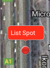
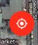
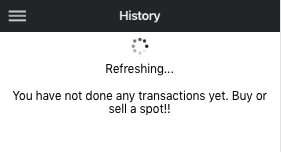
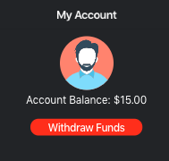
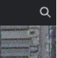

Click on any position on the map and click on list spot. On the next page fill in all the details about the spot and then click on the button below to list it.

Whenever you are lost on the map you can click the button shown below and you will be taken back to current location

Swipe down in transaction history page to refresh transactions

You can view your current balance in My Account page and also make withdrawals as long as the funds are not the $15 initially given by SpotSwopper

You can refer friends to the app using your Referral Code and get 5% value on their first Spotswopper purchase
You can search for a location of a spot by clicking on the search icon in the home page and then start typing the location you want.
